| 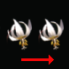 | 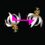 | ||
| A translation | A reflection - M | A glide-reflection: a translation follow by a reflection - G | |
| 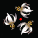 | |||
| 180° rotation - P2 | 120° rotation - P3 | 90° rotation - P4 | 60° rotation - P6 |
Each wallpaper pattern is based on a pair of translations in different directions. The translations are applied multiple times to give a repeating image. This defined a regular grid of points called a lattice. | 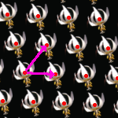 |
The blue shape in the program is called the fundamental domain. The image inside it is translated, rotated and reflected to produce the final image. The yellow parallelogram is one cell in the lattice, the image inside every other cell will be identical to this. |
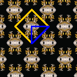 |
The symmetry lines can be shown. In this pattern the final image is produced by reflecting in the magenta lines. This pattern also has rotational symmetry: each cyan-rectangle is a center of 180° rotation. |
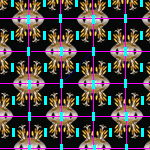 |
| There is a certain flexibility in the selection of the fundamental domain and some of the patterns allow you to have curvy edges. If the pattern contains a line of reflection then that line will form one edge of the fundamental domain. | |
| Lattice type: parallelogram | |||||
|---|---|---|---|---|---|
| 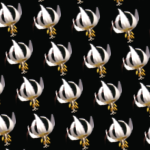 | P1: the simplest pattern, two translations in different directions. | 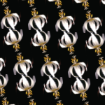 | P2: this pattern has an extra 180° rotation. | ||
| Lattice type: diamond | |||||
| CM: a reflection along a diagonal | 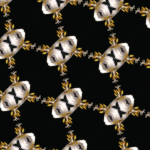 | CMM: two reflections along the diagonal | |||
| Lattice type: rectangle, the translations are at right angles | |||||
| 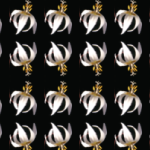 | PM: A reflection | 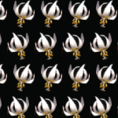 | PG: A glide reflection | ||
| 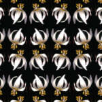 | PMG: A reflection and a glide reflection | 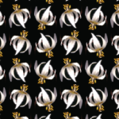 | PGG: Two glide reflections at right angles | 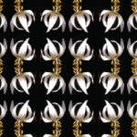 | PMM: Two reflections at right angles |
| Lattice type: square | |||||
| 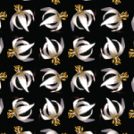 | P4: a 90° rotation | 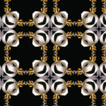 | P4M: a 90° rotation and a reflection | 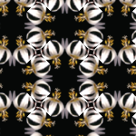 | P4G: a 90° rotation and a glide-reflection |
| Lattice type: hexagon | |||||
| P3: a 120° rotation | 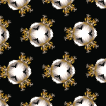 | P31M: a 120° rotation and a reflection | 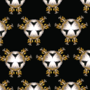 | P3M1: a 120° rotation and a reflection | |
| 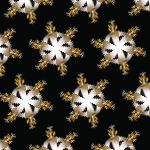 | P3: a 60° rotation | 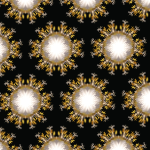 | P3M: a 60° rotation and a reflection | ||
As well as the wallpaper groups their are three other families of symetries in the plane.
Whilst the wallpaper groups repeat in two directions the frieze groups only repeat in a single direction
| 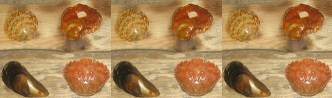 | F1 translation in one direction Symmetry of the infinite sequence of letters pppppp |
| 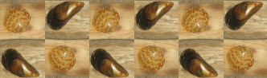 | F2 a glide-reflection pdpdpd. |
| 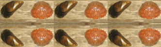 | F3 translation and a parallel reflection CCCCCC |
| 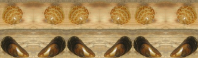 | F4 translation and a perpendicular reflection pqpqpq |
| 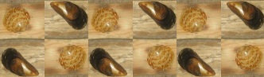 | F5 translation and 180° rotation pdpdpd |
| 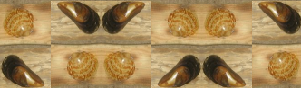 | F6 translation and a perpendicular reflection and 180° rotation pdbqpdbq. |
| 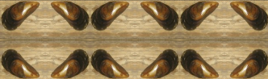 | F7 translation, perpendicular reflection, parallel reflection XXXXXX. |
Frieze groups are often found in decorative borders. The top border of this page is F2 and the left hand side border is F4.
The cyclic and dihedral groups all have rotational symmetry about a single point. Cyclic groups have n-fold rotation symmetry (rotation by 360°/n). Dihedral groups have an n-fold rotational symmetry and two reflections in lines at 180°/n to each other.
| Cyclic groups | ||||
| C2 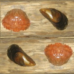 | C3 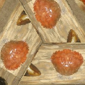 | C4 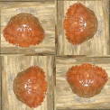 | C5 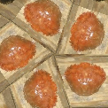 | C6 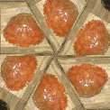 |
| Dihedral groups | ||||
| D2 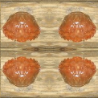 | D3 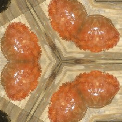 | D4 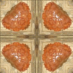 | D5 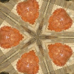 | D6 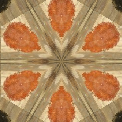 |
The group D1 is technically classed as a dihedral group it just consists of a single reflection
| D1 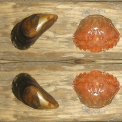 |
Each symmetry group is represented by a member of the class TessRule which defines the type of pattern and a set of vectors which specify a coordinate frame. The origin of this frame is the green dot and the two coordinate axis are the lines from the green dot to the red and blue dots. This frame defines at lattice which tessellate the the plane by parallelograms, and the image inside each parallelogram will be the same.
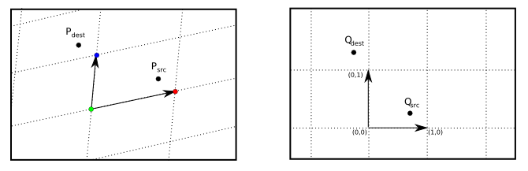First consider the case of the simplest group P1. To calculate the tessellated image for each point in the image Pdest we wish to find
the point Psrc inside the fundamental domain. To achieve this first transform to coordinates in the new frame to
give the point Qdest. As the image in each
parallelogram is identical we can take coordinates in this frame mod 1 giving the point Qsrc. Finally
transform back to image coordinates giving the Psrc. Finally the colour of the pixel at P
For other transformations a little more work is needed. Consider Pmm which is obtained by reflection in two lines at right angles. In the transformed coordinates this is in the lines x=0.5 and y=0.5. Let Qmod be the point after the modulus is taken which has coordinates (xmod,ymod) with xmod and ymod in the range 0 to 1. The y-coordinates of Qsrc, xsrc is calculate as follow:
Each other group will have similar condition.
In the above the transformation we have used floating point coordinates. The above calculations can be repeated using purely integer arithmetic, this results in faster algorithms and eliminates any rounding problems. Let O be the position of the green dot and u and v be the two vectors of the frame. Let M be the matrix with u and v as columns, this has the determinant det = (ux * vy - uy vx). . Now the transformation from a point q in the Q-frame to a point p the P-frame is given by p=O + Mq, and the inverse transformation is q = M-1(p-O). The inverse matrix M-1 is calculated as 1/det (vy, -vx;-uy ux). If we multiply through by the determinant giving q' = det M-1(p-O), observe that q' will have integer coordinates. The above method can be followed through using this scaled frame, with the frame vectors being (det,0) and (0,det).
int Qdest[] = new int[2];
int Qsrc[] = new int[2];
int det = ux * vy - uy * vx;
for(i=0;i<width;++i)
for(j=0;j<height;++j) {
// translate
int x = i - x0;
int y = j - y0;
// calculate Q coodinates of dest
Qdest[0] = vy * x - vx * y;
Qdest[1] = -uy * x + ux * y;
// apply specific transformation
fun(Qdest,Qsrc,det);
// calculate Psrc
int srcX = x0 + (Qsrc[0] * ux + Qsrc[1] * vx ) / det;
int srcY = y0 + (Qsrc[0] * uy + Qsrc[1] * vy ) / det;
// copy src pixel to dest pixel
pixels[i*width+j] = pixels[srcX*width+srcY];
}
// An example of transformation function for group Pmm
void fun(int dest[2],int src[2],int det) {
// find modulus
int a = dest[0] % det; if(a<0) a+= det;
int b = dest[1] % det; if(b<0) b+= det;
// find coordinates of point in fundamental domain
if(a>det/2) a = det - a;
if(b>det/2) b = det - b;
}
The calculation can be sped up by using the lattice structure of the tessellation. First find the bounding box enclosing one parallelogram in the lattice, and calculate the full pattern in that rectangle. The find all the lattice points in the region to be drawn. For each lattice point copy the pixels in the rectangle to a new rectangle based on the lattice point. This will result in a certain amount of overlap, but this does not affect the speed as coping arrays can be achieve very quickly.
Using integer arithmetic offers considerable speed advantages over floating point in the inner loops. Compare these two methods for finding division rounded down (rather than to 0 as in the language spec for /):
int a = (int) Math.floor((float) in[0]/det); int b = (int) Math.floor((float) in[1]/det);and
int a = (in[0]<0 ? (in[0]+1)/det -1 : in[0]/det); int b = (in[1]<0 ? (in[1]+1)/det -1 : in[1]/det);Changing from the first to the second resulted in a four fold speed improvement over the whole algorithm. These two lines represented 67% of the entire speed of the algorithm.
For more information see
Copyright R Morris 2007